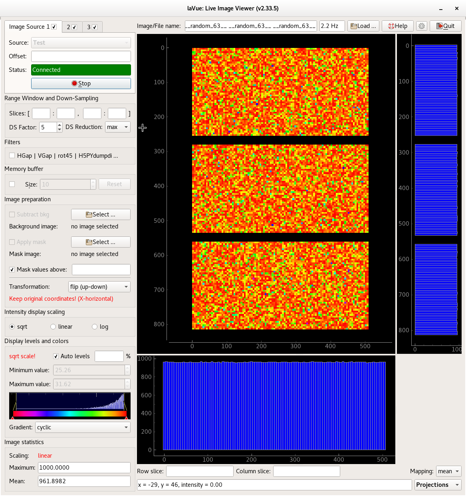

- Image Source(s) is(are) in the corner of the main window top left side where a lavue user chooses a detector image source.
- Below it the Range Window and Down-Sampling group allows for selecting a displayed image part and down-sampling it with a given reduction function
- In the Filters group users adds his/her plugins for evaluating images
- the Memory buffer group allows to access previously displayed images
- In the Image preparation group a background and mask image can be selected as well simple image transformation, i.e. flip, transpose.
- In the Intensity display scaling frame the user selects what intensity scaling should be selected to fit the proper colors on the 2D-image display.
- The Display levels and colors widget is used so set minimum and maximum displayed intensity and choose the display color gradient.
- The Image statistics part shows the basic statistic information about the 2D-image.
- On the top right side of the main window the user finds an Image/File name label as well as a button for Load images from a file-system, Reload images from a file -system, this Help, the Configuration and Quit buttons.
- Below them the detector 2D image is displayed with associated 1D-plots.
- At the bottom of the right side the user selects Specialized Image Tools which provide a simple analysis of the detector image.